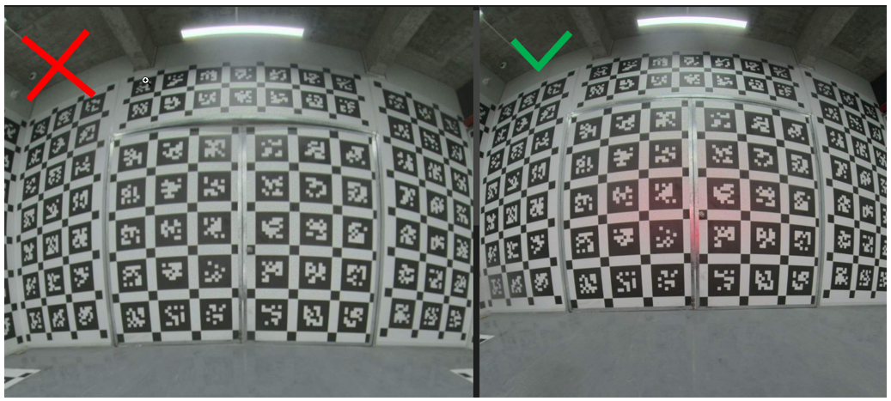
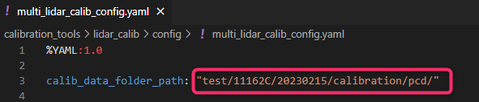
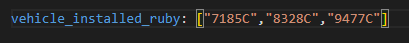

Prerequisite
Whether the vehicle stops correctly on the opposite agency and starts the opposite agency!IntersectionIntersection
Whether the back door of the calibration room is closed correctly!IntersectionIntersection

Vehicle coordinate system is defined as a projection point from the center of the rear axis to the ground
1. Update ground target 3D true value
2. Update T_V_W from the coordinates of the vehicle to the calibration room
3. New increase common_config.yaml , Used to configure wheelbase information (please update when new vehicles are added)
4. Camera detailed calibration process
(1) Prepare the calibration picture. If it is the configuration of 11 cameras, prepare 11+1 (the data collected at the door); if it is the configuration of 14 cameras, prepare 14+1 (forefront long focus at the door at the doorCollected data)
(2) Run the calibration program
Configuration of 11 cameras: bash run_11_camera.sh
Configuration of 14 cameras: bash run_14_camera.sh
(3) Abnormal treatment
According to the program's error information, check whether there are parameters with error or file lack of files
There is no problem with self-examination, you can try to run 2-3 times to calibrate the script. You can jump directly to the next step.
If it is still not good, take the previous calibration result of the same model and put in Camera_calib/Data_Format/Calib_image/Init_kb8 (OCAM) (Pinhole) _Param
For the specifically, you need to put in the results of the calibration results.
Configuration of 11 cameras: bash run_11_camera_with_param.sh.sh.sh
Configuration of 14 cameras: Bash Run_14_CAMERA_WITH_PARAM.SH
5. Lidar calibration tool adaptation
multi_lidar_calib
1. The result output increases the external parameters of different coordinate systems : After the calibration is over, two calibration files lidar_extrinsic.yaml & lidar_extrinsic_to_vehicle.yaml The former stored the external parameter T_W_L of lidar at the world coordinate system.
At present, there will be a temporary file lidar_extrinsic_to_vehicle_wr.yaml. This is caused by inconsistency of the coordinate system developed by Weisi and PMT.
* Configure in multi_lidar_calib_config.yaml
calib_data_folder_path
At this time, ensure that the folder folder in the path is named after the model model.

2. Certain performance optimization : In order to solve the problem of Main & FRONT LIDAR calibration data, due to the lack of the Z and Pitch constraints caused by the lack of ground point cloud data, the new one -stop data is added to optimize the calibration parameter.The collection position of the calibration data is the same.
The data of the station should be used
main_0.pcd and
front_0.pcd Let's name it in the calibration data folder.
*At present, according to the test results, the improvement effect of the main lidar is relatively obvious. M1 is not very stable due to the quality of the point cloud itself.
3. Increase the judgment of Pandar64 and Ruby128: It will be in the multi_lidar_calib_config.yaml file vehicle_installed_ruby The model of the inside is used to determine which 360 ° main laser lidar is installed in the car, and then use the corresponding Config file to calibrate.

single_lidar_calib
If you want to obtain the external reference under the coordinate system of the car body, add the vehicle number of the calibration vehicle on the basis of the original instruction. Take 11162C as an example:
Get the external reference under the world coordinate system: ./bin/multi_lidar_calib ./config/main_lidar_config.yaml
Get the external parameters under the coordinate system: ./bin/multi_lidar_calib ./config/main_lidar_config.yaml 11162C
6. Compatible with the data before and after the calibration of the Chinese agency, carry out the projection of the point cloud to the image